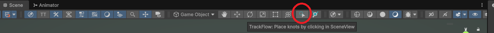
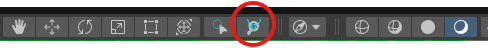
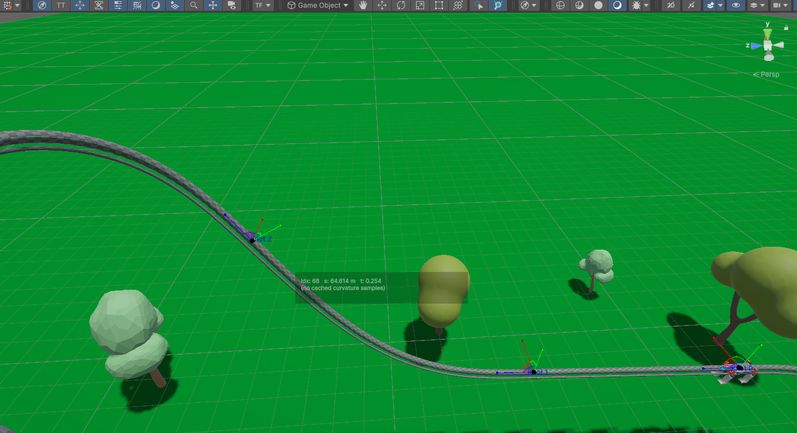
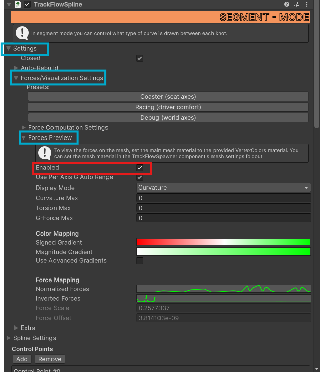
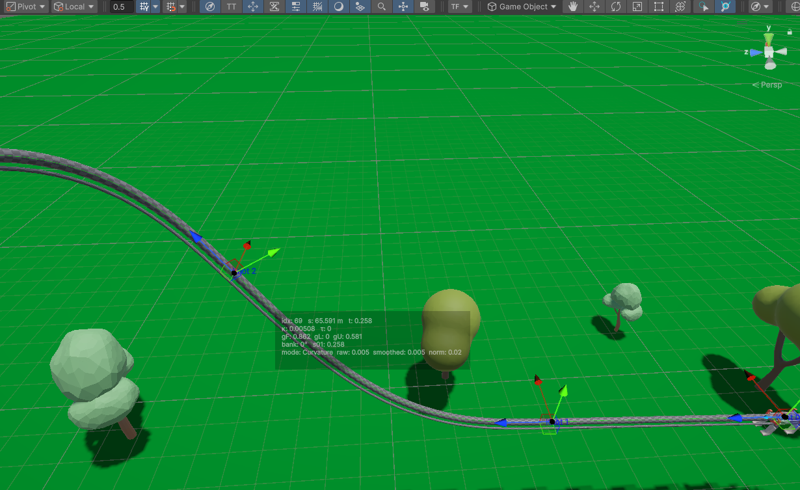
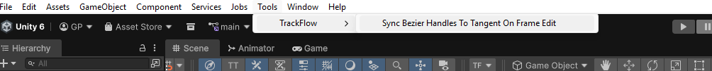
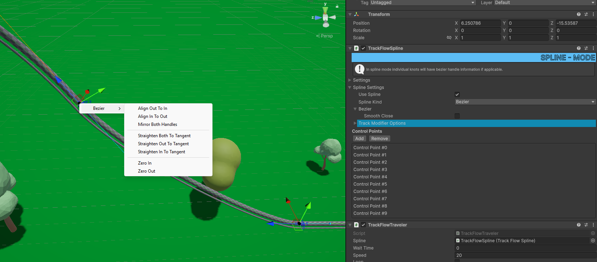

- Generated by
 1.16.1
1.16.1
|
TrackFlow Pro Documentation 1
Generate roller coasters, railroads, conveyors and more with a physics aware spline and meshing system.
|
TrackFlow Pro comes with a few built in tools to help you author curves similar to the built in spline system. In this section we will go over the two tools in the Toolbar, as well as a helper tool located in the Tools dropdown.

This tool is located in the Editor Toolbar, near the end of the transform tools. When activated you can click inside the scene and draw control points. If you do not have a TrackFlowSpline object selected at the time of drawing, one will be created for you, otherwise the knots will be appended to the existing spline.
This tool is located next to the Place Knots Tool.

To use this tool, first select a TrackFlowSpline object that has at least two knots added (one segment). Then select the Hover Probe tool. Now you can hover near the spline and quickly get sample by sample information about the curve.

By default, for speed reasons, you will only be given the sample index, the current arc length in meters (S) and the normalized arc length (T). To get more detailed information you must enable Force Preview Data within the TrackFlowSpline object. Select it and navigate in the inspector to Settings > Forces/Visualization Settings > Forces Preview and check "Enabled"

Now curvature data will be displayed along the curve, as well as force data depending on the Display Mode setting as well as the settings located within Force Computation Settings.
idx: Sample Index
s: Arc Length in meters
t: Normalized Arc Length (between 0 and 1)
k: Curvature (change in tangent direction over arc length)
τ: Torsion (how quickly the curve twists out of its osculating plane)
gF: G-Force along the forward direction (tangent) (values controlled by Force Computation Settings)
gL: G-Force along the lateral direction (normal)
gU: G-Force along the up direction (binormal)
bank: The current bank angle (difference from global up)
mode: The current display mode (change within the Display Mode dropdown)
raw: The raw value of the cached sample.
smoothed: The calculated value of the sample using the generated normalized force mapping profile (The Animation Curve within Forces Preview Dropdown)
norm: The normalized value of the sample (the value of the Normalized Force Profile at the given normalized arc length)
Note: The smoothed value is calculated with this formula: S = norm * ForceScale + ForceOffset where ForceScale and ForceOffset are listed underneath the normalized force map. These two values are also calculated automatically to keep the animation curve normalized between 0 and 1.

When designing curves you might not know what type of curve you want to use right then and there. In spline mode the curve uses the bezier handles to determine the input and output tangent of the curve, and in segment mode it uses the actual frame tangent (blue arrow on the knot). To automatically sync the bezier handles to match the frame tangent, you can use the Sync tool located within Tools > TrackFlow > Sync Bezier Handles to Tangent on Frame Edit. Simply select it and any knots after that point will have the bezier handles synced to the frame tangent when you edit them.

You can also manually sync bezier handles by first switching to Spline mode and then right clicking the knots in the scene view. This will open a context menu where you can align the bezier handles to the tangent in a variety of ways.
